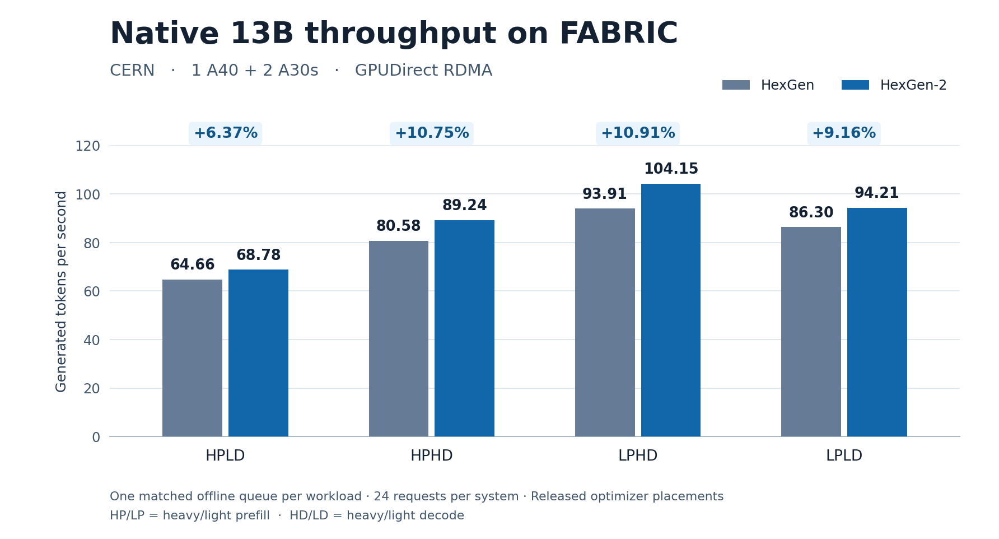

HexGen‑2 on FABRIC
HexGen‑2 improved offline throughput by 6.37–10.91% across four workload pilots. We ran the native OpenLLaMA‑13B FP16 paths on the same CERN fleet (1 A40 and 2 A30s) with GPUDirect RDMA. Each system used its released optimizer’s HPHD placement across all workloads. Each workload used one matched 24-request queue, and all four output audits passed.

| Workload | HexGen | HexGen‑2 | CERN gain | Figure 6 gain |
|---|---|---|---|---|
| HPLD | 64.66 | 68.78 | +6.37% | ~+35% |
| HPHD | 80.58 | 89.24 | +10.75% | ~+29% |
| LPHD | 93.91 | 104.15 | +10.91% | ~+25% |
| LPLD | 86.30 | 94.21 | +9.16% | ~+40% |
The pilots agree with Figure 6 on which system was faster. The paper’s Hetero‑4 gains were larger on Llama‑2 70B with 3 H100s and 9 A100s. With one queue per workload, repeatability under GPUDirect remains open. HexGen‑2, Figure 6